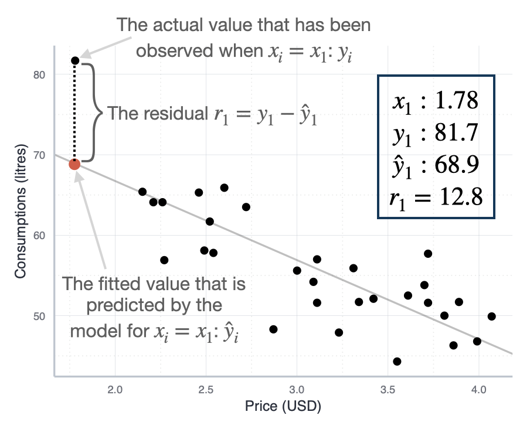
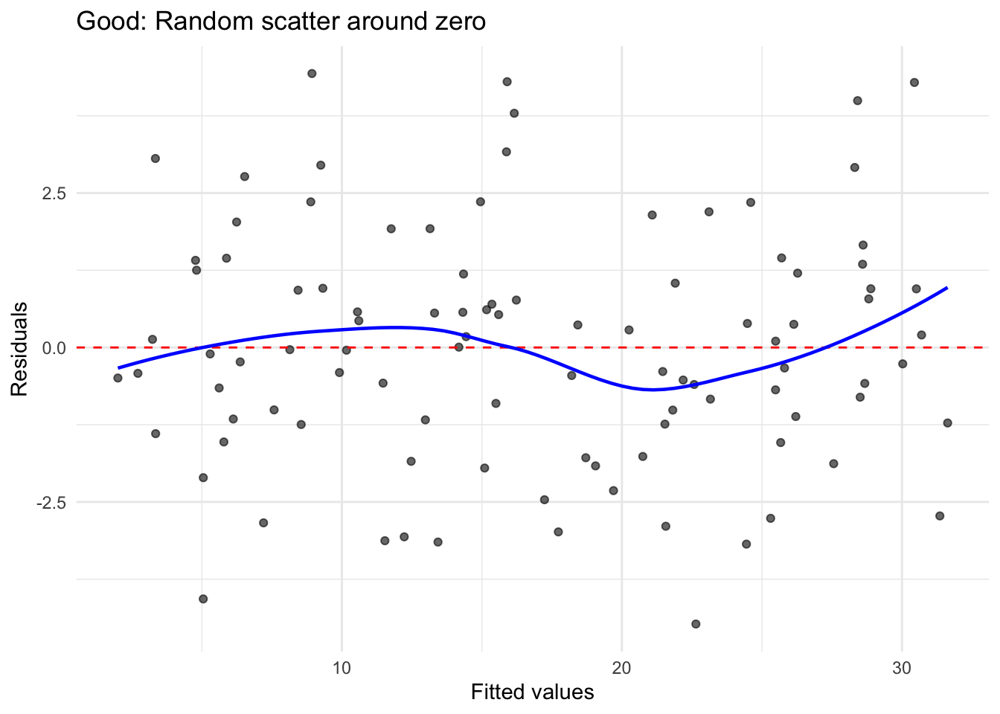
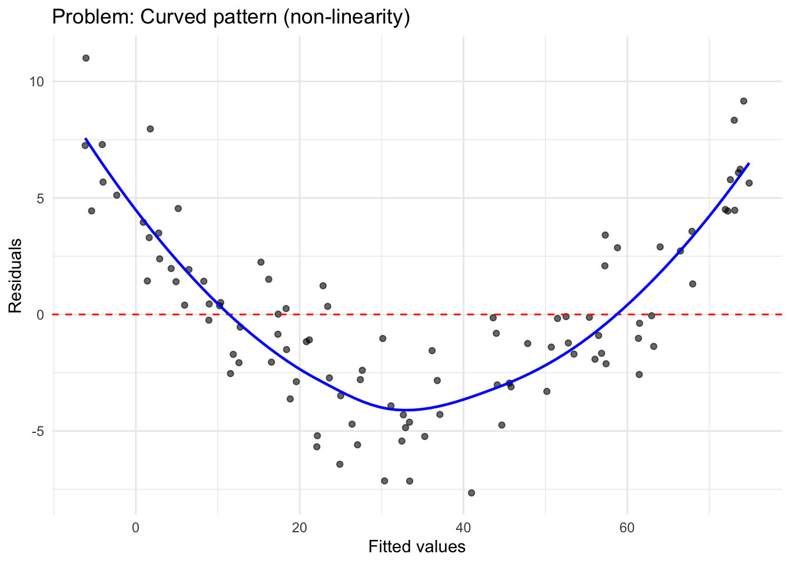
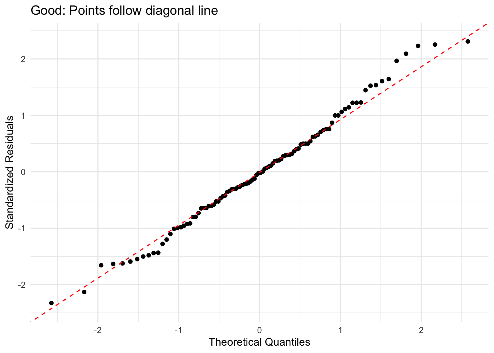
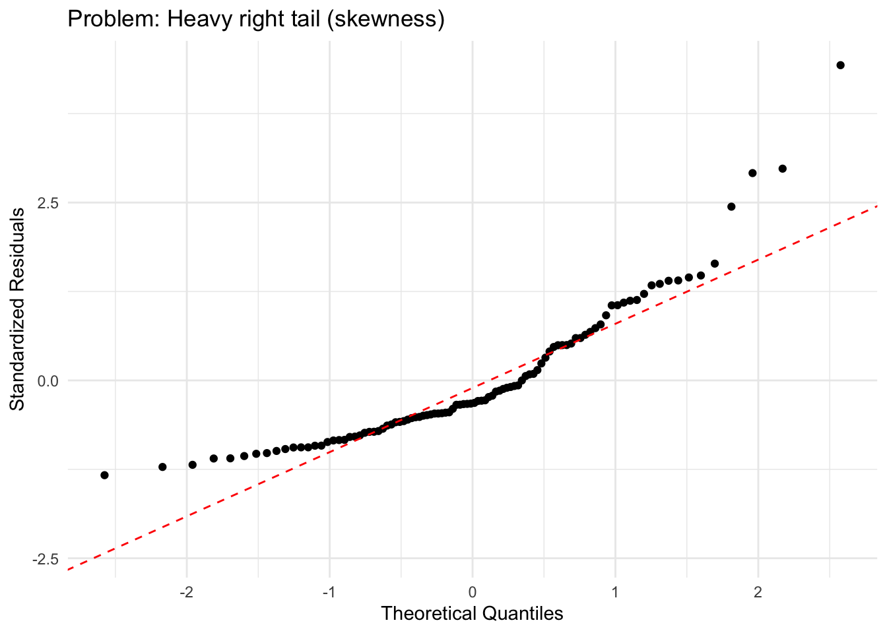
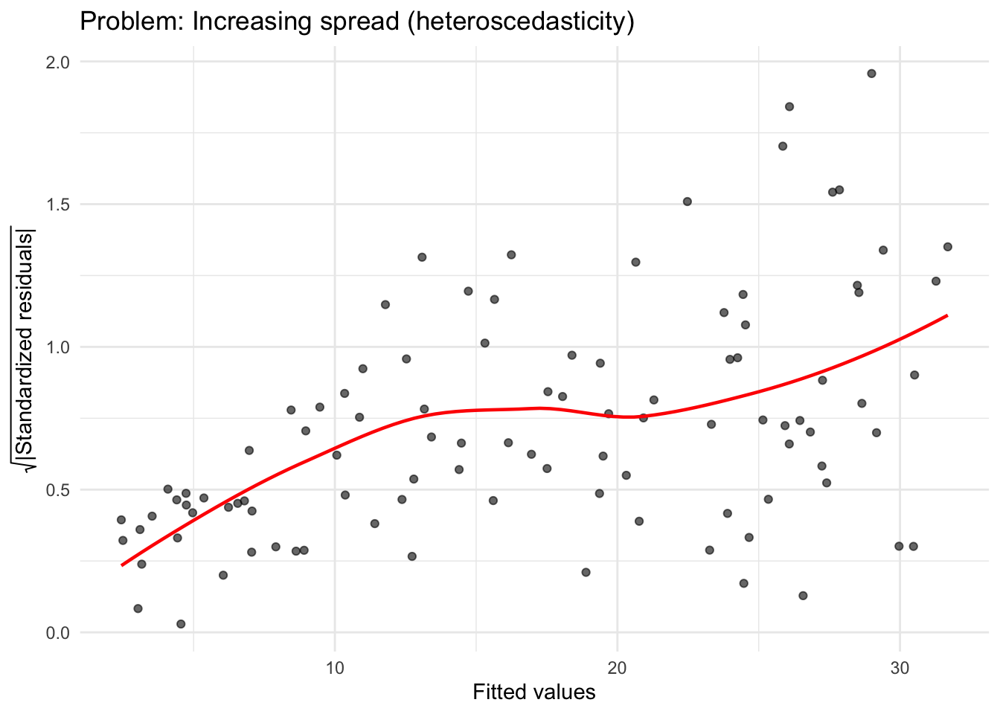

R Packages Used
library(ggplot2)
library(ggtext)library(ggplot2)
library(ggtext)Before diving into assumptions and diagnostic tests, we need to understand residuals—the cornerstone of all regression diagnostics. Many students confuse residuals with error terms, but understanding the distinction is crucial for interpreting diagnostic plots and tests.
Residuals are the observed differences between actual values and predicted values from your fitted model:
\[e_i = y_i - \hat{y}_i\]
where:
In plain language: A residual tells you how far off your prediction was for each observation. If your model predicts a customer will spend 100 EUR but they actually spent 120 EUR, the residual is 20 EUR (see also Figure 1).

Students often use “residual” and “error” interchangeably, but they are fundamentally different concepts:
| Concept | Symbol | What It Is | Can We Observe It? |
|---|---|---|---|
| Error term | \(\epsilon_i\) | True, unknown deviation from the population regression line | No - it’s a theoretical concept |
| Residual | \(e_i\) | Observed deviation from our fitted sample regression line | Yes - we calculate it from our data |
The error term (\(\epsilon_i\)) is the true, unobservable deviation in the population model:
\[y_i = \beta_0 + \beta_1 x_i + \epsilon_i\]
This represents the “true” relationship in the population. We never observe \(\epsilon_i\) because we don’t know the true population parameters (\(\beta_0\) and \(\beta_1\)).
The residual (\(e_i\)) is what we actually observe from our fitted sample model:
\[y_i = \hat{\beta}_0 + \hat{\beta}_1 x_i + e_i\]
This is our estimate based on sample data. We calculate \(e_i\) because we have estimates \(\hat{\beta}_0\) and \(\hat{\beta}_1\).
Assumptions are about error terms, not residuals: When we say “errors are normally distributed” or “errors have constant variance,” we’re making statements about the unobservable \(\epsilon_i\) in the population.
Diagnostics use residuals to learn about errors: Since we can’t observe \(\epsilon_i\), we use residuals \(e_i\) as our best approximation. We examine residuals hoping they reveal the properties of the true errors.
Residuals are estimates of errors: Under the regression assumptions, residuals should behave similarly to errors. If they don’t (showing patterns, non-constant variance, etc.), it suggests the assumptions are violated.
You’ll encounter several types of residuals in diagnostic output:
1. Raw residuals (\(e_i\)): \[e_i = y_i - \hat{y}_i\]
These are what we’ve been discussing—the basic difference between observed and predicted values.
2. Standardized residuals (\(e_i^*\)): \[e_i^* = \frac{e_i}{\hat{\sigma}\sqrt{1-h_i}}\]
where \(\hat{\sigma}\) is the residual standard error and \(h_i\) is the leverage. Standardized residuals have approximately unit variance, making them comparable across observations. Values beyond ±2 or ±3 suggest potential outliers.
3. Studentized residuals:
Similar to standardized but use a different estimate of variance that excludes observation \(i\). More robust for identifying outliers.
Residuals are the empirical manifestation of all our modeling assumptions. Here’s why they’re so important:
1. They reveal assumption violations:
2. They’re model-free diagnostics:
Residuals don’t require you to know the “true” model. They simply show you what’s left unexplained after fitting your model. Large, systematic patterns in residuals mean your model is missing something important.
3. They quantify model performance:
The magnitude of residuals tells you about prediction accuracy. Ideally, residuals should be:
When you examine diagnostic plots, you’re asking: “Do these residuals behave like random noise, or do they show systematic patterns that suggest model problems?”
If residuals are truly random (as they should be when assumptions hold), they should:
Any deviation from this ideal suggests where your model or assumptions may be failing.
Linear regression relies on several key assumptions about the data and the relationship between variables. Understanding these assumptions is crucial because violations can lead to:
What it means: The relationship between each predictor variable and the outcome variable is linear. In mathematical terms, the conditional expectation of Y given X follows a linear function: \(E[Y|X] = \beta_0 + \beta_1 X_1 + ... + \beta_p X_p\)
Why it matters: Linear regression models can only capture linear relationships. If the true relationship is curved or more complex, the model will systematically mispredict values, leading to biased estimates and poor fit.
What it means: Each observation is independent of all other observations. The residual (error) for one observation does not depend on the residual for any other observation: \(Cov(\epsilon_i, \epsilon_j) = 0\) for \(i \neq j\).
Why it matters: Independence is required for valid standard errors and hypothesis tests.
Common violations: Time series data (autocorrelation), clustered data (students within schools), repeated measures (multiple observations per subject), spatial data (nearby locations are similar).
What it means: The variance of the residuals is constant across all levels of the predictor variables: \(Var(\epsilon_i) = \sigma^2\) for all \(i\).
Why it matters: Heteroscedasticity (non-constant variance) leads to inefficient estimates and incorrect standard errors.
What it means: The residuals (errors) follow a normal distribution: \(\epsilon_i \sim N(0, \sigma^2)\). Note that this assumption is about the residuals, not the variables themselves.
Why it matters: Normality is primarily required for valid hypothesis tests and confidence intervals, especially in small samples.
Important note: This is the least critical assumption for large samples due to the Central Limit Theorem.
What it means: No single observation has disproportionate influence on the regression estimates.
Why it matters: One or two unusual observations can completely change your conclusions.
Key distinction: - Outliers have unusual Y values (large residuals) - High leverage points have unusual X values - Influential points have both high leverage AND large residuals
| Assumption | Description | Visual Test | Quantitative Test |
|---|---|---|---|
| Linearity | The relationship between predictors and outcome is linear | Residuals vs Fitted plot (Tukey-Anscombe) | RESET test (Ramsey) |
| Independence | Observations are independent of each other | Residuals vs Order plot; ACF plot | Durbin-Watson test |
| Homoscedasticity | Constant variance of residuals across all levels of predictors | Residuals vs Fitted; Scale-Location plot | Breusch-Pagan test; White test |
| Normality | Residuals follow a normal distribution | QQ plot; Histogram of residuals | Shapiro-Wilk test; Kolmogorov-Smirnov test |
| No influential outliers | No single observation has undue influence on the model | Residuals vs Leverage plot; Cook’s distance plot | Cook’s distance (> 0.5 or > 1); DFFITS |
Visual diagnostics are your first and most important line of defense. R automatically generates four diagnostic plots with plot(lm_model) that provide a comprehensive visual assessment. Always examine these plots before moving to quantitative tests.
Purpose: Checks linearity and homoscedasticity simultaneously.
How it works: Plots residuals (\(e_i = y_i - \hat{y}_i\)) against fitted values (\(\hat{y}_i\)). If the linearity and homoscedasticity assumptions hold, residuals should be randomly scattered around zero with no patterns or trends.
What to look for:



Interpretation: The smoothed line (blue) should be approximately horizontal at zero. Any systematic deviation indicates assumption violations.
Purpose: Checks whether residuals follow a normal distribution.
How it works: Plots the quantiles of standardized residuals against theoretical quantiles from a standard normal distribution. If residuals are normally distributed, points should fall along the diagonal reference line.
What to look for:


Interpretation: Minor deviations are often acceptable, especially with larger sample sizes (n > 30-50) where the Central Limit Theorem provides robustness.
Purpose: Checks homoscedasticity more clearly than the Residuals vs Fitted plot.
How it works: Plots the square root of standardized residuals (\(\sqrt{|e_i^*|}\)) against fitted values.
What to look for:


Purpose: Identifies influential observations that disproportionately affect the regression model.
How it works: Plots standardized residuals against leverage (hat values). Includes Cook’s distance contours to identify problematic points.
What to look for:
While visual diagnostics should always be your primary tool, quantitative tests can provide additional confirmation.
Purpose: Formal test of whether residuals follow a normal distribution.
R code:
shapiro.test(residuals(model))Decision rule:
Important notes:
Purpose: Formal test for heteroscedasticity (non-constant variance).
R code:
library(lmtest)
bptest(model)Decision rule:
When to use: Primarily for time series data or any data with a natural ordering.
R code:
library(lmtest)
dwtest(model)Interpretation:
Purpose: Tests for functional form misspecification.
R code:
library(lmtest)
resettest(model, power = 2:3)When to use: Multiple regression with 2 or more predictors.
R code:
library(car)
vif(model)Decision rules:
Follow this systematic approach for every regression analysis:
# Generate all four diagnostic plots at once
par(mfrow = c(2, 2))
plot(model)
par(mfrow = c(1, 1))Examine each plot carefully:
# Normality
shapiro.test(residuals(model))
# Homoscedasticity
library(lmtest)
bptest(model)
# Multicollinearity (if multiple predictors)
library(car)
vif(model)If heteroscedasticity is detected:
# Use robust standard errors
library(sandwich)
library(lmtest)
coeftest(model, vcov = vcovHC(model, type = "HC3"))If influential points are found:
# Extract Cook's distance
cooks_d <- cooks.distance(model)
# Identify influential observations
influential_obs <- which(cooks_d > 0.5)
# Examine these observations
data[influential_obs, ]
# Refit model without them and compare
model_no_influential <- lm(y ~ x, data = data[-influential_obs, ])Visual diagnostics come first: Plots are more informative than p-values, especially in large samples where tests become overly sensitive.
Statistical tests are supplements: Use quantitative tests to confirm what you see visually, not as a replacement for visual inspection.
Context matters: Not all violations are equally serious. Linearity and independence are typically most critical; moderate violations of normality are often acceptable with reasonable sample sizes.
Large samples are robust: With n > 100, minor violations of normality and homoscedasticity have minimal practical impact due to the Central Limit Theorem and robustness of OLS.
Never automatically delete outliers: Understand why they’re outliers first. They may contain important information or indicate model misspecification.
Report transparently: If you identify violations, acknowledge them and discuss their potential impact.
Multiple diagnostics: Don’t rely on a single test or plot. A comprehensive assessment examines multiple perspectives on each assumption.
Remember: Perfect adherence to all assumptions is rare in real data. The goal is to understand where and how assumptions are violated, assess the severity of violations, and make informed decisions about how to proceed with your analysis.
The Gauss-Markov theorem and why assumptions matter
The OLS estimator is BLUE (Best Linear Unbiased Estimator) under five assumptions: linearity, random sampling, no perfect multicollinearity, exogeneity (\(E[\varepsilon | X] = 0\)), and homoskedasticity. “Best” means minimum variance among all linear unbiased estimators. Knowing which assumption does which job clarifies what each diagnostic is actually protecting.
The exogeneity assumption is the most important — and the only one that cannot be checked with residuals. Omitted variable bias (OVB) violates exogeneity silently: the residuals look fine, but the coefficient is wrong. A model with clean diagnostic plots can still be deeply misspecified if a correlated predictor has been omitted.
Functional form testing with the RESET test
The Breusch-Pagan and Shapiro-Wilk tests you have already seen address homoskedasticity and normality. A complementary test checks functional form: whether the linear specification is correctly capturing the relationship between X and Y.
library(lmtest)
resettest(model)A significant p-value indicates that the squared and cubed fitted values add explanatory power — a sign that the functional form is wrong. When this happens, try log-transforming skewed variables or adding polynomial terms, then re-test. Note: with large samples (n > 1,000), even trivially small functional form deviations will produce significant RESET p-values. Use the plot of residuals vs. fitted values to assess practical severity alongside the test statistic.
Heteroskedasticity: fix, not just detect
The standard toolkit (Breusch-Pagan, Scale-Location plot) tells you whether variance is non-constant. The fix is heteroskedasticity-consistent (HC) standard errors, which adjust the covariance matrix without changing the point estimates:
library(sandwich)
library(lmtest)
# HC1 (Hinkley): common in economics cross-sections
coeftest(model, vcov = vcovHC(model, type = "HC1"))
# Or with modelsummary (preferred for tables)
modelsummary(list("Classical SEs" = model, "HC1 robust SEs" = model),
vcov = list("classical", "HC1"))The point estimates are identical in both columns; only the standard errors (and therefore significance stars) change. With cross-sectional data, using robust standard errors by default costs nothing and protects against invalid inference. The opposite — reporting OLS standard errors when heteroskedasticity is present — produces confidence intervals that are too narrow and rejections that are too frequent.
Influential observations: Cook’s distance properly
The check_model() diagnostic marks influential points, but the threshold matters. Cook’s distance \(D_i\) is affected by both leverage (unusual predictor values) and residual magnitude. A common threshold is \(D_i > 4/n\); points above this warrant investigation — not automatic deletion.
cooks_d <- cooks.distance(model)
threshold <- 4 / nrow(data)
data[cooks_d > threshold, ] # inspect, not delete
# Robustness check: refit without influential obs
model_robust <- lm(y ~ x, data = data[cooks_d <= threshold, ])
modelsummary(list("Full sample" = model, "Without influential" = model_robust))If coefficients barely move, the model is robust. If they shift substantially, either the influential observations are genuine extreme cases that should be modelled separately, or the functional form needs revision.
OVB: the invisible bias
The most dangerous diagnostic failure: a model can pass every residual-based diagnostic test — linearity, homoskedasticity, normality, no influential outliers — and still produce a badly biased coefficient because of an omitted variable. OVB is invisible in the residuals because the bias is already absorbed into the coefficient before you look.
The direction-of-bias rule: if an omitted variable \(Z\) is positively correlated with \(X\) and positively correlated with \(Y\) (net of \(X\)), the OLS estimate of the \(X\) coefficient is too large. Formally:
\[\text{sign(bias)} = \text{sign}(\text{corr}(X, Z)) \times \text{sign}(\beta_Z)\]
Use this rule to audit your model: list plausible omitted variables, sign the expected correlations, and report the likely direction of bias honestly.
@misc{gräbner-radkowitsch2026,
author = {Gräbner-Radkowitsch, Claudius},
editor = {Gräbner-Radkowitsch, Claudius},
title = {Regression {Residuals} and {Model} {Diagnostics}},
date = {2026-06-16},
url = {https://euf-methodology-hub.netlify.app/resources/r-programming/regression-residuals-diagnostics},
langid = {en}
}